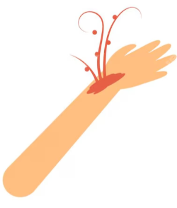
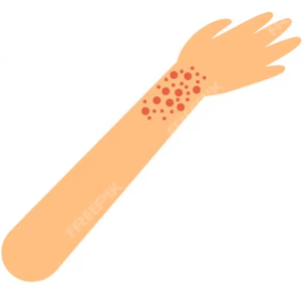

Bleeding occurs when blood vessels are damaged, allowing blood to escape from the circulatory system. It is a natural response of the body to injury and can range from minor cuts to serious wounds.
Bleeding serves an essential role in the body’s healing process. It helps flush out debris and pathogens from the wound, while platelets and clotting factors work to stop the bleeding and form a protective scab.
Bright red blood that spurts with the heartbeat. This type of bleeding is severe and requires immediate medical attention.
Dark red blood that flows steadily. It can be serious but is usually easier to control than arterial bleeding.

Slow, oozing blood from small vessels. This is the most common and typically the least severe type of bleeding.
While most cuts and bleeding are minor and heal without complications, severe bleeding or improper wound care can lead to infections or other complications. It is essential to understand the basics of wound management and when to seek medical assistance.